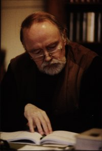

Willy Roggeman
Op deze website is een korte biografie terug te vinden, gebaseerd op gegevens die de auteur ons bezorgde. Onder literair werk vindt men een volledig overzicht van de verschillende titels binnen de drie oeuvre-componenten, met daarbij aangegeven het moment waarop de werken zijn geschreven. Vervolgens is een overzicht van publicaties van de auteur en secundaire literatuur over Roggemans werk opgenomen. Ook een volledige beschrijving en databank van het archief is hier te vinden. Verder vindt men gegevens, muziekfragmenten en beeldmateriaal over het WR Jazz Lab.
